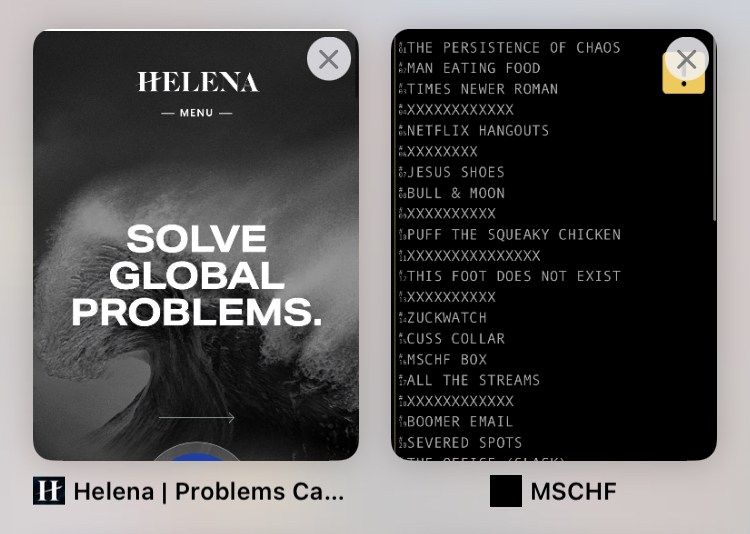

👋 Basics
I'm a senior at Cornell University where I study Biological Engineering. I’m dedicated to designing tech for social impact, innovating tech for medical treatment and clinical research, and solving problems in nature. On the side, I've built projects at local hackathons focusing on environmental sustainability and social good.
Outside of STEM, I enjoy reading, playing sports (including running and lifting), listening to music, and finding and eating good food! I'd love to talk - please email me about anything at jh985@cornell.edu.
My pronouns are she/her.
👩‍💻 Experience
🗂 ASABE Biorobotics Project Team

✏ : Software and Design Team
· Built an image recognition feature using Python on a Raspberry Pi allowing robot to take a collection of potted plant images and accomplish a simulated complete harvest agricultural operation
· Implemented a robot that can autonomously identify, count, and remove excessive and unhealthy leaves and flowers of simulated and real strawberry plants
Official ASABE Website
🗂 SciQ

✏ : Application Development Intern
· Developed an HTML mobile responsive web app with dynamic element placement on webpage through custom CSS for science communicators to request research grants for project proposals from a given wireframe
· Coordinated email and correspondence with connected investors
🗂 American Museum of Natural History

✠: Web Development Intern
· Clean and analyze AMNH’s website by implementing a site-wide page focus initiative on image sizing and an extensive code cleanup, while creating a reporting dashboard highlighting errors impacting page speed from a category perspective
· Architected and built an infinite scroll with pagination design, with CSS key-frame animation to highlight new dinosaur exhibit, increasing page views by 30%
· Analyzed models and classification of visitors from conducted research on-site
✂️ Projects
🗂 Pixelator

· Architected software using Python numpy library to convert images into pixel art sprites without needing pre-processing or post-processing
· Analyzed models and source pictures to easily generate Pixelated graphics for games or posters
🗂 Compilation of Links
